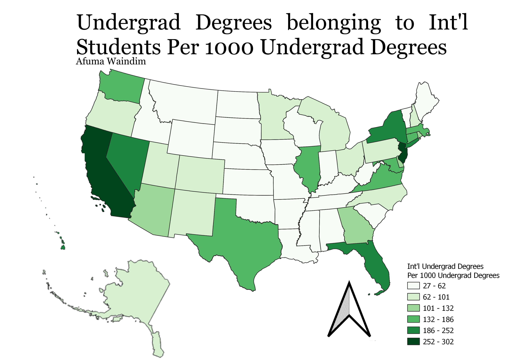

I created a ratio looking at number of foreigners with undergraduate degrees to the total number of people with undergraduate degrees per 1000 undergraduate degrees across all 50 US states.
I wanted to see what states had higher proportions and then try to come up with reasons as to why some states had significantly higher proportions than others.

US States geojson
CSV file
Link to data